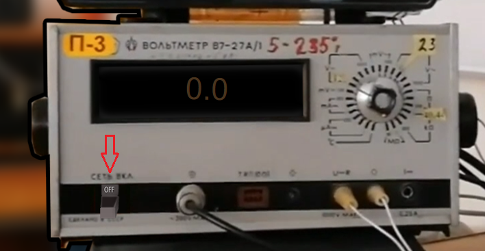
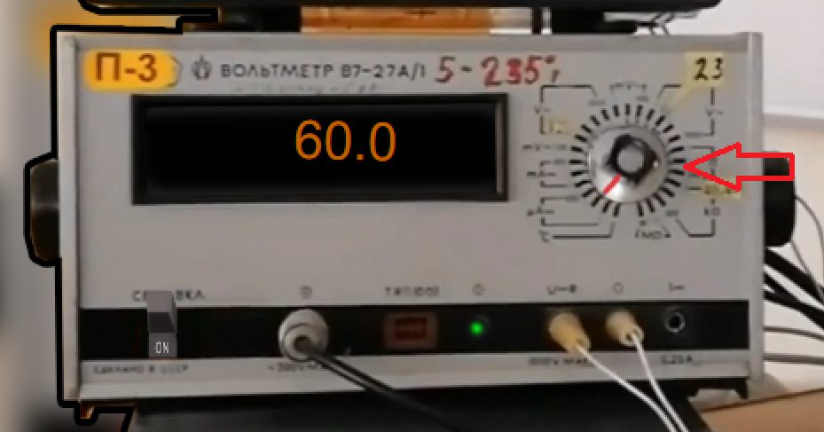
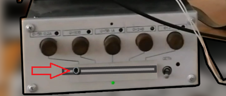
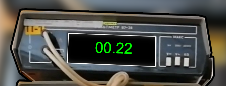
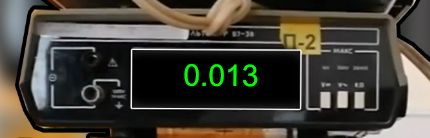

Довідка з виконання лабораторної роботи
На цій сторінці описуються ключові моменти у виконанні віртуальної лабораторної роботи, які можуть викликати питання.
1. Для початку виконання віртуальної лабораторної роботи, необхідно увімкнути прилад за допомогою відповідної кнопки.
 Зображення 1 - увімкнути прилад2. Обираємо значення потрібної анодної напруги, за допомогою відповідного перемикача:
 Зображення 2 - обрати напругу3. Змінюємо струм соленоїда, за допомогою повзунка
 Зображення 3 - зміна струму соленоїда  Зображення 4 - показує струм соленоїда в А  Зображення 5 - показує силу струму на магнетроні в А